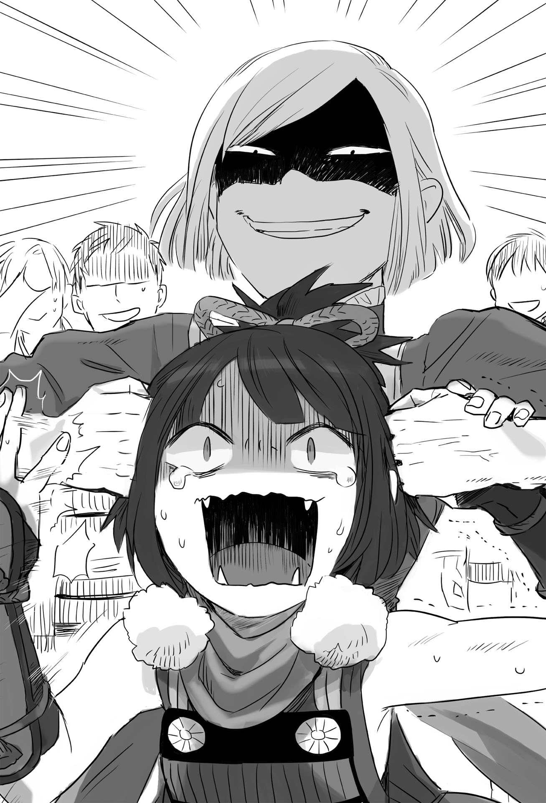

Chapter 1 – The Princess’s Resolve
.
Part 1
Princess Marguerite and her son appeared!
When Baldr’s existence was announced as a legitimate descendant of Trystovy royal family, the whole continent was sent into a great tremor.
The one who received the greatest impact was naturally Trystovy Kingdom.
「──What’s the meaning of this? Shouldn’t Princess Marguerite hold resentment toward the royal family?」
The crown prince Bernardi yelled with an upset tone.
The one who killed Marguerite’s mother and banished from her birthplace should be the royal family of Trystovy Kingdom.
That was why the dukedom announced that they wanted to secure Marguerite’s safety and used her to back their claim that they were the liberator of the country in the end.
And yet Princess Marguerite had married with a noble of Mauricia since a long time ago and the son that was born between them rejected the legitimacy of the dukedom.
The ulterior motive of the dukedom that wanted to courteously welcome Princess Marguerite before assassinating her when the time was right had gone completely off the rail.
Furthermore the one who appeared was tremendously problematic.
Baldr Antrim Cornelius.
The greatest hero of this generation whose story would surely passed down as legend until a hundred years in the future.
Even though he was just a mere viscount, he crushed the invasion of Haurelia Kingdom practically by his own effort and climbed to the rank of margrave when he was still at his teenage years.
At present he was at the top five most influential people within Mauricia Kingdom.
It was impossible for Trystovy Dukedom that was exhausted from civil war to prepare a treatment that could satisfy him .
.
「Valerie. What do you think we should do?」
Archduke Jack frowned and turned his gaze to his trusted retainer.
Even though the lineup in the political world had mostly been replaced by the next generation, the archduke still didn’t have any other consultation partner than an old person like him. Valerie laughed with scorn inside his heart.
It was the proof that Jack didn’t have the nerve to disclose the darkness of the dukedom to someone else.
「Let me see……in general we have two choices.」
「Hou, what are these choices?」
「First is to deny the bloodline of Margrave Antrim……in other words, we claim that he is a fake and refuse to acknowledge him.」
Certainly for a wandering princess to disguise herself as a mercenary, met a count who fell in love at first sight with her at the end of war, becoming his wife, etc, etc, such story sounded too good to be true and there were a lot of people who were thinking that.
However there was a problem with this suggestion.
They didn’t know what kind of proof Baldr’s side had.
If they made a ruckus claiming that Baldr was a fake while Baldr actually had an unarguable proof, the dukedom’s reputation would clearly fall with other people thinking of them as a mere usurper.
This kind of reputation was a cause of concern that couldn’t be underestimated at all in international politics.
If they were careless, it might also affect the justification for Answerer Kingdom to lend their help to Trystovy Dukedom.
「That way might be good if we are dealing with a random nobody but……」
Jack was at a loss.
Baldr was a great noble of Mauricia Kingdom and the hero at the second Antrim war. It wouldn’t work even if they tried to simply bulldoze this mother with the nation’s authority.
The possibility was high that creating falsehood would be simply end up as them digging their own grave. It appeared dangerous for them to rashly deny Baldr’s claim.
「What if we also prepare our own fake? I think that will become a basis to make people doubt the other side’s claim.」
「We will be politically damaged if they find out that ours is fake. Besides, there is no more time for us to make such maneuvering.」
That’s right.
Normally around ten years of preparation would be necessary if they wanted to play with such scheme that was related to a noble’s origin.
A thorough preparation was necessary in order to show a lie as a truth. In that respect, Jack believed that nine out of ten Baldr and Marguerite were genuinely royal family of Trystovy.
「Then the second choice. Margrave Antrim has announced by himself that the blood of beastman is flowing inside him. Therefore it’s possible for us to reject his right of inheritance on that basis.」
「……As I thought that’s the safest way.」
Jack muttered in resignation.
By choosing this option, it meant they would have to acknowledge that Baldr was truly descended from the royal family and that beastman blood had been mixed into the royal family of Trystovy.
If possible Jack wanted to avoid this option, but he couldn’t brave the risk.
「Even so, how eccentric he is, to intentionally proclaim that he has beastman blood in him on his own.」
If there wasn’t the matter of the beastman blood, the dukedom wouldn’t be able to avoid being placed in disadvantage in regard of having the just cause. It would be even more difficult for them to deal with this situation without Baldr unnecessarily admitting it.
That was what Jack said.
(──How foolish. You can say something like that because you are only thinking based on the small world you are living in.)
Valerie laughed scornfully at how blind Jack was.
(Certainly the beastmen are held in contempt and their number is no more than ten percent of the whole populace of this continent. However their unity is far more solid compared to human.)
If the beastman race consolidated their strength, that strength would easily surpass a nation.
Especially when it came to close quarter combat, there was no country in this continent that could oppose such force on their own.
Their strength wasn’t conspicuous only because they had scattered everywhere until now.
Now, how would the beastman society move after obtaining Baldr as their figurehead?
It was even comedic how Jack was unable to turn his mind toward such possibility.
(You’re convinced that your current position will continue for eternity. That’s why you fools are only feeling a small sense of danger like that even now after a monster like Baldr has appeared.)
And then the more Baldr and by extension the beastman race got persecuted, the more united they would be with increasing hostility that was directed toward the dukedom.
Jack and Bernardi didn’t even notice that this was no different than them signing their own death warrant.
.
Part 2
There was one more country that was shocked as greatly as Trystovy Dukedom.
It was the Gartlake Kingdom at the north.
It was a country with many beastmen living in it and it was known that it had no prejudice toward beastman race just like its neighbor Nordland Empire.
The royal family there was endorsing for human and beastman to marry instead. The proportion of beastman in Gartlake’s population was even bigger than Nordland.
.
「You’re saying that a king is coming out from those whelps!?」
A girl of blooming age raised her voice roughly with her ears bristling up completely. Her name was Sakuya Kagetsu.
Her distinctive traits were her large eyes and her triangle cat ears that had beautiful fur.
「……Regrettably.」
A man──Dominicus hanged his head down looking like he was disappointed from the bottom of his heart.
His body build was quiet rugged, so it looked humorous when he was falling on his knees crestfallenly like this.
「This isn’t Dominicus-sama’s fault. Please don’t be so disheartened.」
The adjutant beside Dominicus held his shoulder and desperately cheered him up.
Dominicus was the commander-in-chief who was the central figure of Gartlake’s military. It was troubling that someone like him was acting depressed in this kind of place.
「The path to the next generation that finally started to become visible……」
Dominicus was a central figure of a movement that was seeking to grant the right to inherit the throne to beastman.
That movement was bearing fruit. In case the beastwoman who the crown prince took as concubine gave birth to a boy, the momentum to grant him the right to inherit the throne would gather strength.
The matter this time happened right at such time.
「This isn’t such a simple problem.」
「Head shrine maiden-sama, what do you mean by that?」
Sakuya’s expression was grave. It made Dominicus’s expression clouded.
「Do you forget? Of the verse that said “all tribes must never be in discord with each other when the beast king appear”.」
「Hah? No, certainly there is something like that……」
Dominicus held his head with a troubled look because he hadn’t even remembered that.
Would they need to place themselves in the position below the dog ear race?
No, they absolutely wouldn’t accept such thing.
「To be honest, I wished that something like this would happen with the king appearing from our tribe though……」
Actually the head shrine maiden of this beast god shrine Sakuya had a plan for many years.
It could even be said as her dream.
Just like the crown prince Gustav of Nordland Empire, there were also some people in Gartlake who harbored doubt toward the long dispute between Gartlake and Nordland.
「Dominicus. If it’s you who has climbed up until the seat of commander-in-chief then you must have realized it. The morons who want to hold us back are skillfully controlling the rumors to sow discord among us.」
「……You’re right. Just recently I also heard a rumor that said the shrine is opposing the budget increase of the military.」
Of course he didn’t believe the rumor, Dominique said with a shrug and a smile.
「Who is profiting from making us getting into discord like this? I’m always wondering that. To put it simply, there is no benefit to the shrine even if we are poking our nose into military’s budget.」
「Well, the followers of the financial minister who is strict with the budgeting, the ministry of works, the ministry of home affairs, and our royal family aren’t living that lavishly, but if this other country then it will be the department of the royal household that is a suspect.」
「There are a lot of people who want to reduce the military’s budget to make use of it themselves but……this isn’t just the work of a person.」
Sometimes individual would act following their emotion. However organization wouldn’t move with emotion.
Sakuya knew that from experience.
「──I wonder why did the dog eared tribe killed our first king Brocas-sama?」
「That’s obviously because they were driven with self-interest and harbored the appalling ambition to rule over the beastman race……」
Sakuya simply nodded at Dominicus’s mechanical answer.
「Everyone believe that without any doubt. That’s why we kept getting into conflict with Nordland where blood is washed with even more blood. Although it seems that the other side is insisting that it was us cat ear tribe that killed Brocas-sama.」
「It’s outrageous how the play innocent to their own crime and lay the blame of such heinous high treason to us. This is why those whelps can’t be trusted!」
「But, what benefit did the dog ear tribe obtain from doing that?」
Dominicus was bewildered by Sakuya’s words.
「Head shrine maiden-sama, what do you mean by that……?」
「We lost the country that we had finally built, we were discriminated by humans, moreover we devolved into fighting and killing among ourselves. Since the death of Brocas-sama, the beastman race has always been oppressed until now.」
「That’s right! That’s why we can’t forgive those dog eared bastards!」
「However the dog eared race has also tasted the same suffering until now. I have a doubt. In the end who was the one that killed Brocas-sama and benefited from it?」
「Such thing……no, how could such thing possibly……」
Dominicus scratched his head. His logical mind understood, but he couldn’t accept it emotionally.
If it was asked who benefited from such thing, then the only answer was human.
The humans took the land of the beastman race and erased the threat from beastman society.
The beastman race had been the minority from the start. With their race breaking up, they lost their social influence even further.
「There is no proof. But thinking back, there is also no proof that it was the dog eared tribe that harmed Brocas-sama. Although it’s also impossible to ask everyone to abandon the thing that have been taught to us by our ancestors for so many years.」
It was a very well thought out plan.
Sakuya even felt scared toward the one who thought up this scheme.
The beastman race would lose all reason when it came to the first king Brocas. They couldn’t heal this bad habit even when they knew about it. This was like their chronic disease.
Brocas’s existence was just that special for the beastman race.
「When I arrived at this doubt, I myself couldn’t believe it. But the more I thought about it, the more I found how illogical Brocas-sama’s assassination was. After all Brocas-sama was clearly different from the beastman in the mind of the ordinary people.」
Dominicus gulped audibly.
He finally noticed what it was that Sakuya wanted to say.
「This matter is only know by very limited number of people including you. Strictly speaking Brocas-sama wasn’t a pure beastman but a mixed blood. He unusually didn’t possess animal ears as a mixed blood, but he still inherited the trait of beastman.」
「──You mean, the King’s Gate.」
「The inhuman existence that possess both the traits of human and beastman──using that abnormal strength and charisma was what made Brocas-sama worthy to be the beast king. There is no way anyone would think they could possibly replace such person by killing him.」
「Those who know the existence of the King’s Gate can’t deny that.」
Luckily or unluckily, Dominicus was aware that King’s Gate really existed in reality.
Certainly it was unthinkable to try replacing someone like that.
The King’s Gate was the symbol of beastman, but its owner was definitely something different from a normal beastman.
「I’m thinking that this Margrave Antrim is an owner of this King’s Gate.」
「For two King’s Gate owner to appear in the same generation, perhaps this is the first time this happen even during the long history of beastman.」
「A husband and wife who both possess the King’s Gate ascending to the throne of a new country. Do you think it’s insolent for me to hold such dream?」
Dominicus’s heart was shaken by Sakuya’s words despite himself.
Dominicus knew how terrifying King’s Gate was from a direct experience.
And there were two people who had it? That wasn’t funny. He wouldn’t face such force even if he had ten thousand troops under his command.
But actually there were two more people who had that King’s Gate, but Dominicus had no way of knowing that seeing that he wasn’t an all-seeing god.
「──I have no intention to forgive the dog eared tribe. However perhaps I can find it in me to compromise with them if it’s for the sake of seeing such pairing to be realized.」
Sakuya grinned in delight.
「──This is an opportunity. An opportunity that finally come after beastman race’s one thousand years of isolation. Missing this opportunity will be unforgivable.」
「Then, we will send Satsuki-sama?」
「Assign someone trusted to accompany Satsuki and send her out. We will start from there. After all we are not even sure yet that Lord Antrim really possess a King’s Gate or not.」
「Yes ye~~es! Leave it to me nya! I’m going to appraise that guy’s caliber nya!」
The beautiful girl at the middle of her teenage who was listening to their conversation stood up with sparkling eyes.
「……Satsuki, you should fix that way of talking of yours already.」
「But this is my identity nya!」
This Satsuki was a half human half cat eared tribe who became sixteen years old this year.
She had silky and glossy black hair and strong willed black eyes. Her face was similar with her mother, childlike and adorable. She was really worthy to be called a princess shrine maiden.
However there was no cat ears that were unique to beastman race on her head.
Because she was born with King’s Gate, Satsuki couldn’t have cat ears although she had the blood of cat eared tribe flowing inside her.
It seemed the complex she held because of it had grown to an embarrassing direction.
「Fufu~~n! I want to quickly have a match against fellow King’s Gate owner nya!」
Her expression broke into a smile ‘ehehe’. Sakuya spontaneously wondered if she might have raised her daughter wrong and held her head in worry.
.
Part 3
It was a palace with distinctive pure white color. Three huge spires were standing inside in a row.
This was the headquarters of Europa Religion, the biggest religious group in the continent, Solvidivian(ソルヴィディヴィアン).
Once this religion was designated as the national religion of the unification dynasty and the influence it exerted in the whole continent was still extensive even now.
Its power had declined after the breakup of the dynasty, but nearly a fourth of the continent’s populace still followed this religion even now. It was the biggest religious force around.
The corridor was filled with tranquility and solemnity that really suited the image of a holy city. At the end of that corridor, there was a meeting room that could only be used by high ranked people of the religion.
Five men were having a discussion inside that room that had been sound proofed.
「──This is troubling. Trystovy’s king Umberto was also truly problematic. I can’t believe that he created a child with a beastman.」
「How is the reaction of the other countries?」
「Mauricia Kingdom is halfheartedly giving their support. I heard that the second princess also stopped appearing in the official functions. It was a well-known fact that princess was arranged to marry with Margrave Antrim. But now King Welkin himself isn’t really enthusiastic to continue that arrangement.」
「──As expected no father will want to give his daughter to a beastman. That’s a natural reaction.」
「But, Sanjuan Kingdom and Majorca Kingdom are proactively giving their support. Nordland Empire too, the beastmen there are already starting to form an expeditionary force.」
「Nordland has been a remote region infested with those animals from the start……the maritime nations at the south are also lacking in faith as expected.」
When a nation was built on the foundation of trade like shipping industry and the like, most of the statesmen there would become a realist.
In addition the sailors were also holding deep faith toward the sea god Okeanos since time immemorial. The influence of Europa Religion there was small.
「Trystovy Dukedom has formally announced that they don’t recognize Margrave Antrim’s right of inheritance. Answerer Kingdom also announced the same thing.」
「If we look back at the beginning, this is a seed that they planted. It’s only natural that they do this!」
A conspicuously large man was the one who shouted that in fury. A small man past middle-aged calmed him down with an intellectual gaze.
「Calm down Nikolai(ニコライ). You are in the presence of his eminence.」
「……I have showed you something unsightly, Archbishop Sergei-sama.」
The man who was called Sergei wordlessly urged the talk to continue.
The head of the church’s intelligence department Yuri(ユーリィ) bowed deeply toward Sergei and continued talking.
「It’s bothersome because Trystovy’s maritime guild announced their support for Marquis Antrim. They have influence with the ordinary citizens of Trystovy. If the archduke is defeated, the people will accept Marquis Antrim as their ruler.」
「The people there is tired of the long civil war. They are thinking that even someone with beastman blood in him is alright if that person can ende the civil war and return the peace. This situation can be said as impossible to happen before the civil war.」
Another diplomat of the church Powell(パウエル) added to Yuri’s words.
「What depravity! This is why the civil war never end no matter how much time passed!」
Nicolai who was in command of the church’s battle division was enraged once more.
「──The timing is too bad. If only Marquis Antrim is merely someone descended from the royal family, there would be many things that we can do to deal with this.」
Connections with many countries, fame as a hero, and then the hope of the people for a hero that would bring an end to the civil war.
If only these things didn’t exist, it would be really easy to crush Baldr.
However it was impossible to crush the current Baldr even if a country used all its strength to attempt it.
「We should mobilize the church’s special corrective division. We also have to pressure Answerer and Mauricia……」
The white haired old man in his seventy who kept quiet until then opened his mouth gravely.
「──I shall grant the special corrective division the permission to use the relics. This is not an opponent that we can win against by fighting honestly.」
「Your eminence, that’s……the permission to use the holy relics is only limited to those with the position above bishop.」
The core of the special corrective division was an assassination unit that was formed for the sake of removing an enemy that opposed the church’s faith. Other than this unit, there was also intelligence unit and supply unit to complete the special corrective division.
People with high religious piety were gathered from the whole continent to make up the assassination unit. This unit was made up from elites among elites that numbered around thirty people.
However it was because they were elites that only two of them, the commander and vice commander who had rank above bishop.
「We will only meet defeat if we don’t prepare countermeasure. Marquis Antrim is most likely──in the possession of King’s Gate.」
.
Part 4
Antrim territory was in a commotion because of the preparation for going to war.
There was no problem with supplies like food and the like because Sanjuan Kingdom was giving all the support that it could, but there was no helping with how small the number of troops was. After all Baldr was nothing more than a viscount not a long time ago.
However his financial strength couldn’t be compared with the average noble.
Baldr’s personal assets were already tremendous, on top of that Dowding Company was going all out to offer him with funds in the hope of receiving compensation when Baldr became the king.
Naturally Savaran Company that had grown remarkably also got deeply committed with the financial affairs of Antrim.
「As I thought, the problem is the quality and quantity of the regular army……」
Baldr had received the report that Trystovy Dukedom was hurrying with their attempt to settle the hostility with the maritime guild.
Baldr absolutely needed the strength of maritime guild, both for securing the beachhead to invade Trystovy and also for their cooperation in managing the country after the war.
And so he needed to start his expedition before the maritime guild was destroyed.
「People can be hired with money, but there is nothing we can do with the number of commanding officer that we have. That is something that we can’t entrust to mercenary.」
Baldr nodded at the words of his close friend Brooks.
There were also some mercenaries who had commanding ability, but Antrim army had too many secret informations.
Mercenaries could turn into enemy anytime when they were hired by someone else, so the number of information that Baldr could disclose to them was limited.
With the scale of Antrim territory’s population and economy, it was easily possible to hire an army of more than ten thousands. However Baldr’s limit at this time was to command three thousand soldiers.
「More than that and the troops might devolve into a disordered mob. I know it’s impossible but, perhaps I should rely on Marquis Randolph……」
── There was no other way. Just when Baldr was about to make that judgment,
「So you are here! Long time no see, Marquis Antrim-sama!」
「H-headmaster Ramillies?」
Ramillies appeared wearing an old looking armor that had been used for a long time. But it was giving off a dull radiance with scratches from many battles decorating it.
「I came here after receiving the permission of quitting from his majesty. As the knight of Margrave Antrim’s late great-grandfather Viktor-sama, please allow me to accompany you until the fire of this life died out.」
Ramillies kneeled and displayed his wide back solemly.
The largeness of the resolve that was overflowing from his every single action made Baldr unable to immediately find the words for replying back.
He had heard from Maggot that Ramillies was a knight who was sworn to Viktor.
But this was the first time Baldr truly felt how tremendous the loyalty that Ramillies devoted to his great grandfather and the sublimity of his knight’s soul.
Who could possibly stop an old man who was pushing his old body in order to fulfill the last moment of his life?
「This margrave of Antrim, Baldr has certainly received that life. I expect a conspicuous service from you that won’t shame the name of my late great grandfather.」
「By your will!」
Ramillies slowly stood up after finishing his knight’s oath. Then he dragged out the two man standing behind him in front of Baldr.
「This man’s name is Gerhart. He was my subordinate when I was leading the knight order, but he insisted to come with me no matter what.」
「It’s an honor to meet my lord margrave for the first time, my name is Gerhart Mauser(ゲルハルト・マウザー). I heard that Ramillies-sama is going to go back to the frontline and I hurried myself here to serve. I beg for my lord’s leniency!」
「Could it be that the other one is also the same?」
Baldr asked the other youth who had a different atmosphere from Gerhart.
「I too am a former subordinate of Ramillies-sama who look up to him, but my position is a bit complicated. My name is Barnard Derby(バーナード・ダービー). If possible, I wish to be allowed to serve Margrave Antrim-sama who will become the king of Trystovy Kingdom.」
Barnard impudently declared that he wanted to bet on Baldr in order to have successful career. Ramillies forcefully pushed down his head to rebuke him.
「This guy is saying this kind of thing, but I can guarantee his ability. He is the fourth son of Count Derby and he has gone through various difficulties until now.」
「Old man, don’t say that!」
「Who are you calling old man! You should fix how you talk if you want to show up your parents!」
Actually, there were also others third or fourth son of noble who had the expectation that they might be able to take part in Baldr’s leftovers if they followed him.
However Baldr also didn’t have the leeway to recruit some prodigal sons who didn’t even have any real battle experience. In that sense some additional personnel whose ability was guaranteed by Ramillies was a godsend.
Ramillies himself was also someone with the caliber to act as Baldr’s proxy to take command of the whole army.
There was nothing more appreciable than this for the Antrim army that was troubled by the lack of personnel.
「I think the coming battle will be a difficult one, but I expect great efforts from you sirs.」
.
After receiving substantial authority over the troops, Ramillies immediately integrated the mercenaries and formed an army of five thousand strong.
It would be impossible to take in the mercenaries and integrate them into the army this quickly without the capability of Ramillies as a former mercenary.
This feat was only possible Ramillies still had connections with mercenaries even now and he had abundant experience in ascertaining someone’s character and ability.
Originally Zirco would be the one who took this role.
Zirco’s whereabouts became unknown during the fierce fighting in the second Antrim war, but she was recently discovered at the forest near Haurelia’s border.
Antrim rejoiced when Zirco returned back safely and Maggot who ran wild held a hellish martial arts competition.
There was nobody who wouldn’t be happy when a comrade-in-arms who they entrusted with their life survived.
Baldr himself would also be able to put a lot of trust to the mercenary unit if Zirco was involved in it, but it would be too horrible to ask that from Zirco whose condition wasn’t too good due to the after-effect of her injury.
Besides there was one other problem.
──There was a new life residing in Zirco’s stomach.
.
Part 5
「Oi! Put me down! What kind of shaming play is this-!」
「Don’t move too much until we go to the doctor.」
Beck──the benefactor who saved Zirco’s life carried her in princess carry to the doctor just the other day.
Zirco was often attacked by fever and stomachache due to her injured internal organs, so now she was practically retired from the mercenary business.
And then, even if she managed to recover from her injury, she wouldn’t return to become mercenary anymore.
The current Zirco was unable to leave Beck behind and went to the battlefield.
Since she was saved by Beck and learned the happiness of woman, Zirco thought that she had become weak.
Even so, she didn’t think of it as something bad at all.
.
「──This is your third month.」
「B-b-b-by, by that you mean this is, a new life, the crystallization of love, the nine months of gestation, that kind of thing?」
「In other words you are pregnant.」
「Hawawawaawawawawawawawaaw」
Although she had done the thing, Zirco was bewildered by the pregnancy that took place unexpectedly.
(What to do? What to do? What to do?)
「Zirco.」
Zirco noticed that Beck was caressing her head with a very gentle voice and she lifted her face.
「I’ll, become, father?」
Beck was a man who was abandoned by his parents and also the villagers because of his uncommonly huge body.
Although he was now interacting to some degree with the populace of Antrim, his somewhat reserved attitude was still the same like before.
「That’s right. Beck will become a papa.」
As a wife, as a mother, it was her mission to protect the child that would be born and give Beck the happiness of family.
This day, Zirco resolved herself to wash her hand completely from the mercenary business that she had spent the majority of her life in.
.
「──If Zirco retire, then I guess we should hold a formal marriage ceremony.」
A grand marriage ceremony was carried out with Baldr’s authoritative pronouncement.
The role that Zirco accomplished for Baldr’s sake was exceedingly great.
If she was going to start a new life, Baldr had no intention to be stingy with spending money and effort.
Baldr called Zirco’s mercenary comrades like Cell, Glymur, and Miranda, also Ramillies and Maggot to attend the ceremony. Even Silk came to attend it. For the priest Baldr even called an archbishop from the capital.
Zirco was speechless from how grand the casts were.
The order-made wedding dress that was prepared for Zirco was designed to make her body line looked slender. Zirco who lost weight due to the after-effect of her injury now looked no different at all from any woman at the city.
「……You have really transformed.」
「I want to let Mistol to see this too.」
「I don’t think he will be that happy to see this though……」
Mistol’s comrades who knew his feeling was feeling conflicted.
.
「Do you swear to love your husband Beck until death do you part?」
「──I swear.」
「Do you swear to love your wife Zirco until death do you part?」
「I, swear.」
「Then both of you, exchange the kiss of vow and may god’s blessing be with you.」
── Also, don’t come over here until at least thirty more year you got it.
Zirco quietly recalled those last words of her childhood friend.
Aa, forgive me Mistol.
It will be many years in the future before I’m going to the world over there. After all I don’t plan to die until I see my grandchild’s face at least.
Zirco stood on her toes and received Beck’s kiss.
.
There was a female warrior who was called Zirco the Gale in the past.
Later on, she became an energetic housewife who happily took care of a red haired boy who looked similar with her.
It was said that she was teaching sword to the small boys in Antrim.
Some swordsman or archer who sometimes visited would also help in the dojo. It seemed the dojo’s reputation in the neighborhood was excellent because it had practical way of teaching.
.
Part 6
Antrim territory would become the belonging of Mauricia royal family at the same time when Baldr secured a base at Trystovy.
With that, Mauricia Kingdom should become closer to be a nation with centralized authoritarian rule.
Usually the territories under the direct control of the royal family were managed by the third or fourth son on noble who didn’t have any chance to inherit their house.
There was no way the nobles wouldn’t bite at this huge benefit.
But before anyone knew it, the information that Baldr had appointed his school friend William as the one to take over Antrim was spreading. This information seemed to be plausible.
── Then we have to become the direct retainer of Prince William no matter what!
Like that, the fourth son William who was thought to have no chance to even become a spare suddenly gathered a lot of attention.
Even William who was spending a carefree princely life before this could only smile bitterly.
He thought that one day his name would be taken off from the royal family register and he would become an adopted son of a noble somewhere. Or perhaps he would be used for political marriage with other country.
Yesterday the second son Edward who had thin presence grumbled at him grudgingly.
「……How nice for you. You have a good friend.」
The second son Edward and the fourth son William had been forced to stand by for a long time until now to serve as the spare of the crown prince Richard.
Because Richard’s son had been born recently, the two of them lost their value as a spare.
However that didn’t mean that they could have it easy just because they had been freed from such role. Now they were forced to do a job hunting for their future. This was the difficulty of being a royalty.
Edward had a personality that couldn’t really fit in noble society. His evaluation among the nobles wasn’t really good.
「Brother Edward’s marriage with the daughter of Count Ainsworth has also been decided isn’t it? You will be the next Duke Edinburgh. The day brother can make a great contribution will soon arrive.」
Edward scratched his head shyly. He didn’t look that dissatisfied with his arrangement.
This big brother was a honest person who wasn’t two-faced. William liked him better than the eldest son Richard.
William himself didn’t have an aristocratic personality.
Depending on the situation he planned to make a success in life using his martial skill to be a knight. That was one of the reasons he enrolled into the knight academy.
To encounter that Baldr there could be said as the mischief of fate.
「……Come to think of it I heard a strange rumor……」
Edward awkwardly spoke some words that William didn’t even expect.
「It seems that Rachel-aneue will be betrothed to the eldest son of Duke Richmond, August.」
「Haaah?」
No no, that’s impossible.
William knew how serious the feeling that Rachel held toward Baldr, no matter how reluctant he was to admit it.
He also knew that his father Welkin was an idiot parent who spoiled his daughters.
William couldn’t believe that his father would do something horrible that made Rachel sad. He should be the last person to do something like that.
「As I thought the matter of beastman’s blood is really weighing down father’s mind……」
Baldr’s grandmother was certainly a beastman, but she should only be a quarter beastman and three quarter human. In that case, the blood of beastman flowing inside Baldr didn’t even reach a tenth.
That was William’s thinking, but he also knew there were many nobles who exposed their disdain to that.
「Does Rachel-neesama know about that talk of engagement?」
「Well, you also know about the situation right? Since then she locked herself inside her room all this time and won’t come out at all.」
William gritted her teeth when she imagined Rachel’s grief right now.
He hated his own powerlessness at this kind of time.
That Welkin had made his decision. William couldn’t imagine how he could possibly move his father after he had hardened his heart and even went as far as making his daughter cried.
But, even so──.
「I’ll come with you if you’re going. I’m also indebted to Rachel-aneue after all.」
This was why William liked Edward.
「Thank you very much. Let’s do what we can too.」
.
However, as they should have expected beforehand.
The entreaty of William and Edward was brushed aside by King Welkin easily.
「You two, think of your own position a little!」
「We are thinking! We will always be the little brothers of Rachel-aneue no matter how much time passed!」
「This is why you two are still kids!」
Welkin couldn’t hold down his irritation and kicked the floor angrily.
(Do they think I made this decision because I like it?)
The title of king was a position that would force its holder to make heartless decision, but as expected even Welkin couldn’t help but feel pained that his family wouldn’t understand him.
「No matter what you two say, I won’t let Rachel to marry with that guy! You two should follow Richard’s example and be obedient!」
William and Edmond were driven out of Welkin’s office. Their shoulders dropped in dejection outside.
「So big brother Richard is at father’s side as expected.」
「But it’s only brother Richard or mother who could possibly stop father’s decision.」
「But from how father behaved, mother might be siding with father.」
「I wonder about that. Mother isn’t someone who is too assertive after all……」
「──From how you two are looking right now, it’s impossible to convince father as expected isn’t it?」
Before the two noticed, the third princess Margaret was standing before them with a bitter smile and a shrug.
「Do you two have time? I want to have a little talk.」
.
Margaret’s room was always decorated with various flowers throughout the year. Her room had the nickname of “the hanging garden of lotus blossom palace” with how varied the flowers were and how they blossomed splendidly.
The nickname came because her room was placed at the highest floor of the lotus blossom palace where the female royalties were living at.
Flowers of southern country were blooming profusely with vivid colors, but unfortunately Edward and William’s personalities were far from being someone who could appreciate the flowers’ beauty.
William sat down on a sofa and he only made a half-hearted greeting before he began to talk.
「And, how is Rachel-neesama doing?」
Rachel was a stubborn person despite how she looked.
She could easily decide to do hunger strike for the sake of protesting.
William couldn’t imagine at all that she would follow their father’s order quietly.
「She won’t even meet me. I heard that she almost didn’t touch her food at all. At this rate Rachel-neesama’s body will break down……」
「As I thought it’s like that……father is also really troubling.」
Edward folded his arms and muttered with a serious expression.
Edward was present at the celebration party for the victory of the second Antrim war. He thought that event was effectively the engagement announcement for Rachel.
Edward had never seen Rachel looking as happy as that time.
「What does it matter that there is a little bit of beastman blood mixed inside Baldr-sama! Even Beatrice-oneesama is getting along with the beastwoman concubine of his highness Gustav!」
To be honest Margaret felt envious at the relationship between Baldr and Rachel.
Even Baldr shouldn’t hold a dislike toward Rachel.
Even though he pretended to act nonchalant, Margaret had noticed how often he sent his gaze toward Rachel’s breasts and hips.
Baldr himself must be thinking that no one noticed, but even Rachel herself had noticed.
There was certainly a result from Rachel being a bit adventurous at the victory celebration.
She thought that time would solve the rest and yet…….
「Even so……aren’t things too quiet even though this is Rachel-neesama we are talking about?」
There was something that didn’t make sense to William.
Rachel always acted harmless in front of Baldr, but among the three sisters Rachel was actually the most active one and the one with no patience.
She wasn’t a strategist like Beatrice, but she possessed instinct and uncommon ability to take action. It was really strange for her to do nothing but locking herself in her room like this.
「Rachel-oneesama too must be shocked by what happened this time. In addition she got paired with that August. He is famous among the maids as someone with bad habit of playing around with woman.」
「Yeah……I have also heard that rumor.」
「That adulterer, there is no way I can entrust Rachel-oneesama to him!」
「Well, Baldr-sama also isn’t someone who can be said to have good habit when it come to woman though.」
「──Certainly!!」
Even so there was no doubt that Baldr would love Rachel more than August could. Both William and Margaret didn’t doubt that point.
「Anyway……we will do anything to help if Rachel-neesama ask. Tell her that she shouldn’t worry by herself alone.」
「I get it. I’ll tell her somehow. As for you William, you have a lot of chance to meet with Baldr-sama, so I’ll rely on you when it’s necessary!」
「Leave it to me.」
At this time William didn’t have the slightest thought that he would have to carry out his words right after this.
.
「──Wait, help! William! I can’t find Rachel-oneesama anywhere-!」
「EEEEEEEEEEEEEEEEEEEEE!?」
William and Margaret desperately searched for Rachel, but it ended in vain. They couldn’t find any clue about Rachel’s whereabouts.
The two started to consider that Rachel might have ran away to where Baldr was. Just when they were seriously considering to send a search request to Antrim,
An earth-shattering problem came up.
.
Part 7
「Your highness Rachel, is this really alright?」
「──I don’t mind. I’m resolved.」
Rachel’s expression was pale, even so she smiled sweetly.
Rahcel would lose of the thing that had made up herself until now for eternity, but it couldn’t be helped because there was no other way than this in order for her to obtain what she really wished for.
「……Then, your highness is admitting your infidelity toward your fiancée August-dono?」
「Yes, I don’t love that person. I’m in love with another man.」

This place was the senate of judicial affairs.
It was a body that specialized in judging high ranked noble or royalty. Its true role was to prevent the absolute monarch of this country the king to use his authority rashly.
Because of that even the king, no, especially the king could hardly influence this body.
The contrast of white and black colors here represented the law’s order.
Rachel was sitting on the black defendant’s seat that signified her status as the wrongdoer.
「Even if you can’t love your fiancée, you can’t be blamed as long as you don’t love other man. Furthermore your highness hasn’t actually done any unfaithful action in reality. If your highness is going to change your mind then now is the time.」
「My heart belongs to another man for as long as I live. I know that this is unfaithful as someone who will become Sir August’s wife.」
The elder statesmen brought their face close to each other and held a discussion.
「Originally an act of infidelity is referring to case of clandestine meeting, sexual act, or pregnancy with other man. Therefore, depending on her highness, this matter can be covered up easily……」
「The person herself is continuing to testify this clearly that she loves another man. We have to acknowledge that this is an act of infidelity toward the man who is her fiancée.」
「──That’s how it is. Even though this is just a matter of heart, there is no denying the fact that she is continuing to say out loud how she loves another man. If we judge that she is not guilty in this matter, there will be nothing to hinder her for sending love letters as many as she want to other man.」
「We have to declare her guilty in order to protect the law’s order.」
The senate of judicial affairs was a public judicial body. The result of the trial here would also influence the future as precedent.
They were in the position that didn’t allow them to hand down a biased verdict.
「It’s not like her highness has done anything concrete, so we can’t sentence her with penal servitude or exile though……」
「According to the paragraph 70 of royal family law, she can’t avoid to have her name erased from the royal family register at the very least.」
「Your highness Rachel, are you fine with that?」
Rachel nodded resolutely, because Rachel was bringing her case to the senate of judicial affairs like this was exactly to stop being a royalty.
『I have no daughter to wed to a beastman.』
Rachel had correctly discerned the meaning of Welkin’s words.
Which was to say, he couldn’t possibly give Baldr who had beastman blood flowing inside him the bloodline of Mauricia royal family.
The stigma of infidelity and the risk of falling to be commoner were a serious blow for Rachel.
Most of all it wasn’t like there was mutual love between Rachel and Baldr. Depending on the situation, it was also possible for Baldr to disdain her as a tramp for what she was doing.
However the possibility of Rachel marrying Baldr was zero as long as she was staying a royalty.
With her name erased from the royal family register, her name also vanished from the royal family’s family tree. Her bloodline also wouldn’t have any connection at all with the royal family of Mauricia for eternity.
Only after that Rachel was finally allowed to stand at the start line.
「Then Rachel. You have no more place to belong in the palace from now. You are free to go and fall anywhere. However, I ask you to at least stop from doing any act that bring shame to yourself.」
「My deepest thanks for your warning to me, honorable elder.」
「──You must be tired from going through this trial that you aren’t used to. I permit you to take a rest for a while.」
One of the elders smiled wryly at how stubborn Rachel was acting while sending a messenger to Margaret.
.
Part 8
Margaret secretly put Rachel under her custody. At the same time William spurred his horse to Antrim territory.
The stigma that Rachel placed on herself this time was fatal.
Anyone of proper standing would even avoid exchanging word with Rachel from now on.
August was the man who would inherit Richmond House in the future. Being Rachel’s ally was the same as turning him into their enemy.
Rachel had been raised as a princess since her birth and she never lacked for anything. It was impossible for her to live without anyone’s help.
William only knew one person who could help Rachel now.
William continued to spur his horse without any rest or sleep. He ran three horses to their death due to his reckless riding.
He fought the sleepiness that was assaulting him until the Gawain Castle finally came into view. Seeing that Willliam mustered the last of his spirit.
The gate guards raised their alertness seeing the gasping William arriving on a horse that was drenched with sweat all over. They asked for his identity.
「Get down from the horse and say your name! Do you know whose castle this is!?」
「I’m William. I apologize for coming without any advance notice.」
「……Y-your highness William!」
「Take me to meet Baldr, please!」
William looked like he was going to faint anytime soon. The guard panicked seeing that and sent a runner to inform Baldr.
.
「──William? What in the world happened?」
It was already unusual for William to be in Antrim. And yet he was also alone and also in extreme exhaustion. Baldr asked him in panic about what had happened.
There was absolutely no doubt that a serious problem had occurred.
William prostrated with his forehead hitting the ground as soon as he saw Baldr.
「Please! I’ll listen to anything you ask if it’s something I can do even if it cost me my life! That’s why, I beg you to accept Rachel-oneesama!」
「W-William? What are you saying?」
William was still a royalty despite his usually friendly attitude.
It would affect the royal family’s good name if she suddenly prostrated himself like this. He wasn’t a man who could be allowed to bow his head so easily.
Regardless of their status, Baldr considered William as a friend.
William’s sister complex was a bit bothersome, but a person who was open minded and cherished loyalty was someone to be treasured regardless whether they were a royalty or a noble.
That was why Baldr decided to entrust Antrim that contained so many secrets to William.
「Wait a second……did something happen to her highness Rachel?」
If Baldr didn’t mishear, William just asked him to accept Rachel.
To be honest when he announced about the beastman blood in him, Baldr thought that his engagement with Rachel had become very hard to happen.
The meaning of the show at the victory celebration party was blatant for those knowledgeable in politic, but there had never actually any official announcement about Baldr and Rachel’s relationship until now.
That was why Baldr was thinking that Rachel might have gotten dragged into some kind of matter because of this seeing at how panicked William was, but what William told him was something that was completely outside his expectation.
「Rachel-neesama──she refused father’s order of her engagement to August to persist with her love to you. Specifically she confessed in front of the senate of judicial affairs that she doesn’t love August as her fiancée.」
「That’s rash……!」
Baldr never thought that Rachel was able to make such irrational decision.
For Baldr, Rachel’s well bred manners was something that brought him tranquility in a part of his heart.
That was because the women around him starting from Maggot were all strong woman with a fierce core, but this was the first time that Baldr realized how Rachel also had such pride that allowed her to fight so fiercely.
Baldr never even expected Rachel to oppose Welkin’s decision head on like this regardless of what she was feeling.
「──Nee-sama isn’t a royalty anymore. She is just a commoner now. She doesn’t have anything anymore whether it’s status, money, or influence. What she has right now is just her love toward you.」
Rachel wasn’t just not having anything.
She had also opposed the king and even picked a fight with Richmond House that was one of the ten great nobles. Her existence was now like a god of misfortune for anyone who lived in Mauricia.
The only one who could protect her was Baldr who was going to leave Mauricia Kingdom.
「Please. I have nobody else to rely on other than you. Right now Margaret-neesama is taking custody of her, but we can’t keep her within the palace forever, and Margaret-neesama herself also has a marriage talk right now.」
Actually there was a proposal for Margaret to marry with the crown prince of Haurelia’s new king Jean, a prince named Henry.
Henry already had a wife, but because they never expected that Jean would ever become a king, his wife was someone with low status. And so they were searching for a legal wife with status worthy for the future king.
The other party was also eager, so the possibility that this marriage went through was high.
Haurelia Kingdom needed a large amount of budget for their restoration after the defeat in the war, so they were attempting to deepen their connection with Mauricia royal family even more than before.
Most likely the time Margaret was able to shelter Rachel wasn’t that long anymore.
「Please! You can ask me to do anything that I can do! If you abandon Nee-sama to her fate, she will……!」
If Rachel was thrown away to the society now that she had become just a commoner, she would definitely get preyed by some scoundrels right away.
The society wasn’t so lenient that a young lady with sheltered upbringing could leave in it without any backing. Nine out of ten Rachel would get deceived by some scoundrels and ended up getting sold to a brothel somewhere.
Most of the daughters of nobles who were demoted to become commoner had followed such path in most cases until now.
「Leave it to me.」
Baldr didn’t have any option other than to give that answer.
He understood that he had to put some distance from Welkin.
However, it would be more problematic for him if he angered William here. Without William’s cooperation, it would be impossible for Baldr to pick the appropriate secrets of Antrim that could be handed over.
Besides, August of Richmond House was fortunately indebted to Baldr.
「In a sense, this might help me solve various problems. If this is also within the calculation of his majesty, then he is really one cunning man.」
Baldr grimaced looking like he was displeased from the bottom of his heart.
Baldr didn’t like this kind of scheme that was manipulating woman or children.
「──What do you mean?」
William was a military man for good or bad. He had a simple personality.
He was slightly unable to understand Baldr’s words and could only tilt his head in puzzlement.
「I’m going to become the king of Trystovy. In that respect, the seat of legal wife can only be filled by Silk. That will make it difficult for me to marry her highness Rachel because of our respective position.」
Besides Baldr’s emotional bond with Rachel hadn’t grown to be as deep as his bond with Silk and Seyruun and others.
「If Trystovy Kingdom is revived in the future and form an alliance with Mauricia Kingdom along with Sanjuan Kingdom, Nordland Empire, and Haurelia Kingdom, even forming a federation that unite the continent won’t be just a pipe dream then.」
Of course that was only if Mauricia Kingdom could defeat Answerer Kingdom.
Putting it another way, there was no rival for Mauricia Kingdom other than Answerer Kingdom.
「Mauricia royal family has to keep itself clean in order to become the core of that alliance and exert its influence. They should keep such spotless status at least until Answerer Kingdom is defeated.」
It wasn’t for destroying the existing order in the continent but for reconstructing it.
It was a method that focused on reality to the end. There was no way it was good for a statesman to make a choice between destroying or being destroyed.
If Welkin actually had read ahead until that far and found a point of compromise by arranging this situation, then he was truly a terrifying man. Baldr felt something cold running through his back.
「Most of all, do you forget that there is one more preson who can’t just leave her highness Rachel alone like this? Furthermore that country desperately want a point of contact with me right now.」
「Aah! You mean Beatrice-neesama!」
William also noticed it too late.
The crown princess of Nordland Empire Beatrice was someone who loved her little sisters. There was no way that she would just leave Rachel to her fate without doing anything.
A scheming beauty like her would never let go of this chance.
Baldr was the star of hope of beastman race right now. Beastmen were gathering under Baldr right now not in a few number.
That influence was also spreading until the neighboring country Gartlake even now.
Because of that they wanted to have a connection with Baldr no matter what for the future’s sake.
However, Nordland Empire didn’t have anyone suitable to take that role.
They had two princesses but both of them were already wedded to someone else. They were just considering to adopt a good-looking woman to send over to Baldr before this happened.
If Nordland Empire adopted Rachel into their royal family, then it would be like killing three birds with one stone.
「Want to make a best? I think that a messenger from her highness Beatrice will arrives soon.」
「I also think that’s what will happen.」
William sat down heavily after all tension had left his body.
His heart had been weighed down by the matter of Rachel for these few days, and on top of that he had been riding horse for days and nights. His fatigue had already reached the limit.
「──Sorry but I’ll sleep for a bit.」
「Rest a lot. After all I’ll have you help out with various things after you wake up.」
.
Just as Baldr expected, a messenger from Beatrice came four days later.
It was a really fast reaction when he considered the distance from here to Nordland.
「……That’s, it seemed that the crown prince Richard-sama had notified her highness Beatrice beforehand.」
「Hou……his highness was?」
Baldr nodded at the messenger’s words.
Richard was a man with thin presence and loyal to his father, but was he actually someone with deep affection for his family?
Baldr recalled the figure of the crown prince who he hadn’t interacted much with until now. He recalled crown prince Richard as someone who always had a mild-mannered smile. He didn’t look like someone who was hiding anything inside.
「According to her highness’s thinking, it was Richard-sama who instigated her highness Rachel.」
「So this is his plan from the beginning?」
「Apparently so.」
Perhaps he had to be more vigilant toward Richard’s existence than he originally thought.
Baldr renewed his perception toward the crown prince.
「Also, there is another message from her highness Beatrice-sama to Lord Antrim.」
「I shall listen respectfully.」
「A fair rotation schedule is the key of happy marriage.」
「She talked about that!?」
.
Part 9
「──Good grief, things are so busy I don’t even have any time for rest.」
The one who grumbled that was the dog eared maritime merchant from Trystovy Augusto. (TN: I changed his name from August to Augusto to differentiate him from the other August)
Beside him his mistress Catherine was watching the townscape of Antrim in amazement.
「This place is really bustling. It has been a long time since I last saw a city this crowded in the countryside.」
「I’m smelling a nice sweet aroma~~!」
The secretary Laura seemed to prioritize food before romance.
Augusto observed the surrounding vigilantly even while making the jovial expression of a man of the sea.
(What a waste……even though this city has been developed until this level……)
In the end, would this prosperity of Antrom still be maintained even after Baldr was gone?
The industries that Baldr had planted here would still remain even then.
However if Baldr started similar industries at Trystovy, Antrim would definitely be in disadvantage at the competition.
(No, I guess this place has its own advantage. A land that can facilitate trade with both Nordland and Haurelia is precious.)
The merit of obtaining this territory must be bigger than expected for Mauricia royal family.
If soldiers were stationed permanently here in the future, they would become effective reserve force to monitor the situation within the country while Haurelia was currently weakened.
Surely this territory would be succeeded by prince for generations from here on.
「And, where is this Savaran Company located? I want to buy the hair conditioner and shampoo that we received before again.」
「Recently the face lotion that Savaran Company created is also popular you know!」
「I see. I’ll try asking Presiden Selina for them. Come on, it’s that building over there.」
There was a conspicuously large stone building deep at the shopping district.
A lot people would be unable to sense it, but there was clearly a presence of skilled fighter hiding here. It made Augusto reconfirmed that the president of this company was the fiancée of Lord Antrim.
Most likely the number of guards here was five or six.
Such fighting force was out of place to guard a single company at the countryside, but perhaps this number was still too few to protect a fiancée of Lord Antrim.
.
「Oh, isn’t this the young master of Garibaldi Company? When was the last time you came here directly I wonder?」
「Miss Rorona, you are always beautiful every time I see you. I obtained a coral craftsmanship from Galicia for your sake.」
The head clerk of Savaran Company Rorona looked even more appealing with her graceful appearance. However she lightly brushed away Augusto’s praise.
「You have beautiful companions with you. Are they another new lovers of yours?」
「H-how harsh. I have never done anything insincere by any means just so you know.」
Augusto’s former mistress before Catherine quitted after she had saved enough money and built an inn that she managed with the man she loved.
It wasn’t like Augusto drove her out or that he had hand that wouldn’t stop wander to other woman.
Certainly he got lonely to sleep alone after that former mistress quit and he immediately searched for another mistress, but that shouldn’t be an insincere act in Augusto’s subjective thinking.
「──Ain’t she a middle-aged woman? Is this the kind of woman you like Augusto?」
*Twitch*
Vein pulsed on Rorona’s forehead after Laura ran off her wicked tongue.
Augusto panicked seeing that and covered Laura’s mouth.
「I’ll make a kid with bad mouth like you stay behind next time you know?」
「Fueeh? I’m sorry! I won’t say it again!」
「It’s not me that you should apologize to.」
「I’m sorry. I couldn’t control myself because Augusto praised someone else……」
「It’s alright you know? Recently I also often think that I’m not young anymore.」
Rorona’s smile was like an iron wall that couldn’t be seen through at all. But Rorona too was at the age where she would soon seriously feel bothered about her age.
「Ya should forgive her with that.」
「President Selina, thanks for the save!」
Augusto let out a relieved sigh.
Rorona with her extraordinary body style was right at the center of Augusto’s strike zone, but he wasn’t good with her poker face that didn’t allow her to guess what she was thinking.
「Well, we have known each other for long anyway.」
Savaran Company had worked together with Garibaldi Company even before they joined hand with Dowding Company to sell their products.
From where Selina was standing, Garibaldi Company was a partner that she was most familiar with even among all her good customers. The amount of dealings she had with them was large.
As the amount of products she handled increased, the more she had to rely on maritime transportation. A connection with Garibaldi Company was really precious for Savaran Company.
「What’s yer business today? It’s still not the period when the fleet is goin’ out ain’t it?」
「Aa, actually……」
Just when Augusto was about to open his mouth.
「The wife of the feudal lord who is here, get out here nya!」
A girl with an outfit with a lot of skin exposure that made her seemed like an energetic girl passed through the curtain entrance of Savaran Company.
「Young miss! I’m telling you don’t do this!」
A middle-aged man who seemed to be the girl’s caretaker grabbed the girl’s shoulder with a troubled look, but the girl showed no sign of stopping at all.
「I’ll show that I’m far more useful compared to the dog wife that can’t do anything unless she group up with her pack nya!」
「──I’ll take ya on if ya are pickin’ a fight!」
Selina already had short fuse since the start. She slapped the table loudly and stood up with her head held high.
「Hmph, we got a seedy-looking girl here.」
「W-woman with large breasts just mean that their head is empty nya!」
The first battle between Selina and shrine maiden princess Satsuki at their first meeting ended in Selina’s crushing victory.
Although she hadn’t progressed from being Baldr’s fiancée, it was still an acknowledged fact that she was Baldr’s lover. Right now she was at the height of her time as a blooming woman.
Even her slight gesture of walking and sighing was overflowing with sex appeal that could make a man’s spine shivered.
It was a digression but, that drastic womanly growth seriously affected even Thomas Philips who had climbed the rank to become the vice president of Dowding Company.
「S-Selina-san……bokaa, bokaa, moo-!」
「Calm down! What do you mean by 『bokaa』 like that! You have finally become the vice president so please come back to your senses!」
「Gobuhaah!」
If there wasn’t his secretary who gave him a merciless slap on the face, it was unknown whether Thomas would be able to maintain his rationality or not in the end.
Selina herself wasn’t that dissatisfied to find herself being suddenly so popular among the males recently.
Above all else, for Selina who was feeling some feeling of complex about her status as a beastman, learning that Baldr himself also had the blood of beastman in him gave her a great feeling of liberation.
──Even Satsuki was definitely a beautiful girl who could rarely be seen at countryside like this.
However she was wearing light armor equipment that stressed practicality so she could move easily. Her hair was also only tied behind her head roughly. Compared to Selina who was always extravagantly using hair conditioner and face lotion that had become important exported goods right now, Satsuki’s dignity was far below her.
That was a fact that even Satsuki herself had to recognize.
「And? Who are ya to pick a fight with me especially because I’m Baldr’s wife?」
Selina showed a composed smile. In respond Stasuki’s pressed her lips thinly and declared.
「──My name is Satsuki Kagetsu, the shrine maiden princess of Kagetsu clan of Gartlake nyah!」
Satsuki threw out her chest as though to boast Doyah! .
Certainly Kagetsu clan was the family lineage that was most respected among the cat eared clan in Gartlake.
But, naturally there was no way that Selina knew about that.
Savaran Company was opening up new market at Nordland, but they had no relation at all with Gartlake.
「And, what is this Satsuki Kagetsu’s business with me eh?」
「Heh……? I’m, the shrine maiden princess……」
Satsuki was bewildered because her introduction was easily brushed aside. At Gartlake she had the fame of her mother Sakuya behind her, so there was no one there who didn’t know about Satsuki.
(Why are you in this kind of place──!)
On the other hand, Augusto was so astwonished that it was a wonder he could stop himself from reflexively shouting.
In his imagination, the negotiation with Gartlake would happen after Baldr created an interim government as Trystovy’s king──in other words he planned to hold the negotiation after welcoming Baldr at Mulberry.
He never expected that Gartlake would take the initiative this quickly. Furthermore they even sent their trump card the shrine maiden princess.
(I misread the capability of the head shrine maiden Sakuya. I didn’t expect that she will accept Baldr’s existence this easily.)
「Must be hard to come this far until here from Gartlake. And? Can ya tell me already why are ya pickin’ a fight with me?」
「Uu~~! To take a woman like you as wife, so even this so called Margrave Antrim is just an awful sex obsessed person nya! If it’s like this then I won’t even need to test him nya!」
「Don’t blame other people just because ya don’t have any sex appeal. That’s comical.」
「Shaa──!」
Satsuki flew into rage with the hair all over her body standing on end.
「How dare you talking big like that. Even though you won’t even be able to hunt anything decent with dainty childish hands like that……!」
「Ha……? Hunting……?」
Question marks floated above Selina’s head. Augusto explained to her with an awkward expression.
「The cat eared tribe of Gartlake has a custom of competing in hunting. The one who can hunt the most prey is considered as the better wife.」
「Exactly! That dog ear over there get it nya!」
「Young miss! We are in another country, you should watch your words a bit more……wait nuwaa?」
One of the attendants who accompanied Satsuki raised a strange shout when he saw Augusto.
「T-the tanned young lion──why are you here!」
「Stop that, I hate that nickname that sound like a mistake of stupid youth.」
Then Satsuki also reacted.
「What is it nya? What’s with that cool sounding nickname?」
「He is a skilled merchant of Trystovy who is rumored that you absolutely mustn’t try anything to him!」
「──I also want that kind of nickname rather than being called shrine maiden princess nya.」
The girl suddenly pleaded for a nickname as though nothing had happened even after suddenly picking a fight just now.
It seemed this girl called Satsuki was more childish than expected.
「Ya idiots, go outside if ya want to gossip!」
Just when Selina was going to judge that Satsuki didn’t have any worth to fight against,
「……This is just right, all you dog ears and the guys hiding in the shadow can all come at me nya. I’ll take the likes of you all at once with one hand nya.」
Selina felt an intense air from the girl’s provocation and she silently gave the permission.
──Instantly two men rushed toward Satsuki. It was like the two of them were oozing out from the wall.
At the same time Glymur appeared from behind to cover Selina. Right now he was the guard captain who was exclusively contracted by Savaran Company.
In addition two more people who were skilled mercenaries who just got hired recently also appeared to hold back Satsuki’s attendants.
「──You’re looking down on me nya. Don’t think that two people are enough to somehow manage me nya.」
The attendants made a troubled face, but they didn’t try to do anything to protect Satsuki.
They were given the duty to support Satsuki’s action, but protecting her was outside of their responsibility.
The reason was that Satsuki didn’t need any bodyguard. They knew that they would only be a hindrance for her if they tried anything like that.
「Don’t get carried away……tsu!」
Mercenary who was trained in real battle was completely knowledgeable about what human could and couldn’t do.
Human couldn’t evade attacks that came simultaneously from left and right when they were ambushed from back and front.
──Although that was only the case when it was a fight that happened between fighters of the same level.
「Too slow nya. I’ll yawn if this is your best nya.」
「Whaat!」
Satsuki’s figure vanished from the sight, then right after that the two men’s consciousness was easily taken away from the impact that ran on their neck.
It was clearly an attack that deviated from the speed of normal human.
Satsuki circled behind the two men in less than a moment and landed a blow on their vital point with a speed that couldn’t be followed by human eye.
That speed reminded one of the legendary mercenary Silver Light.
(──No. Even so, she is still not at anego ’s level.)
Glymur who knew of Maggot’s true strength calmly evaluated Satsuki’s speed.
She was certainly fast. It would be difficult for Glymur’s subordinates, no, even for Glymur himself to fight this girl.
However it was possible to buy time.
Glymur was convinced that he could somehow manage by using his experience and instinct from his many years in mercenary business.
This was something that he wouldn’t even dare to dream if his opponent was Maggot.
「Hm……? Looks like you have some fight in you nya.」
「As the captain of Savaran Company’s guards, my reputation will be affected if we lose so easily like this.」
Glymur readied his sword with a quiet confidence radiating from him.
Satsuki was offended by Glymur’s composed attitude.
This man should have witnessed her skill when she defeated two of his subordinates, and yet he was still this composed. Satsuki was confused of the reason why.
「──I won’t care even if you cry later nya!」
(Oi oi, that guy is holding on even against that shrine maiden princess!)
Augusto renewed his evaluation toward Glymur. Even though he was forced to defend one-sidedly, Glymur was still putting up a good fight against Satsuki.
This was a man who he himself would want as his own subordinate by all means if it was possible.
It was uncertain whether there was a man this skilled even among Augusto’s own subordinates.
「Persistent man won’t be liked by the ladies nyah!」
「Well, even I have my own pride.」
Satsuki was overwhelmingly superior in both speed and technique.
And yet Glymur was holding her back with all his effort. That fact was irritating Satsuki.
(Why? Why can’t I defeat him nya?)
She couldn’t feel any threat from the man before her.
Satsuki’s martial skill shouldn’t be so cheap that a man of this level was able to handle her.
Currently even her attendants were astonished with their mouth gaping wide open seeing Glymur’s unexpected battle strength.
(Annoying man nyah!)
On the other hand, Glymur too wasn’t as composed as his expression suggested.
Rather it would be impossible for him to even endure like this if not for several good fortunes that had rolled his way.
Glymur didn’t just have his experiences from the many years he spent in the battlefield, he also had the hard to obtain experience of crossing swords several times with Silver Light Maggot.
Compared to the fear of fighting that demon king , fighting Satsuki wasn’t a big deal at all.
Most likely Satsuki didn’t have real battle experience.
She didn’t have the violent pressure like Maggot that could make him felt like he would be bisected the moment he touched her.
Besides her swordsmanship was too honest.
She would immediately bite when Glymur guided her with his gaze or when he intentionally showed an opening. She was still unable to hold a candle to Maggot.
What made Maggot terrifying wasn’t just her transcendental physical ability due to the King’s Gate.
「Argh, I’m mad now nya!」
The attendants understood what Satsuki was going to do due to her anger. They yelled at her to stop in panic.
「Young miss! Please stop! This isn’t the place for that, that’s extremely secret……!」
「Shut up nyah!」
It was unforgivable that she was forced into a difficult fight when her opponent was just a mere mercenary. The last time Satsuki received this kind of humiliation was when she was still ten years old.
She would crush her opponent hands down.
Even opening the King’s Gate couldn’t be helped to achieve that.
An aura was rising from Satsuki’s whole body. It felt like the temperature of the room was dropping. Glymur realized that Satsuki was still holding back until now.
「Oi oi……this ain’t funny at all y’know?」
The mighty aura that Satsuki radiated was definitely something that rivaled Maggot’s aura.
Even though it was already surprising that such monster existed in this world, it was horrifying to know that there was another monster like that out there.
「──Prepare yourself nyah!」
「Shit! Is the backup not here yet?」
Actually one of Glymur’s subordinates had been ordered to run to the feudal lord’s mansion before Glymur entered the battle with Satsuki.
That subordinate was a trusted man with swift feet. He should have arrived and reported the matter here already but…….
(Although, the reinforcement might not be of any help unless the chief or Ramillies himself come here.)
Or rather, ordinary people definitely wouldn’t be of any help. The result would be the same even if a hundred soldiers came here.
This girl’s martial might was something that defied the accepted norms to that degree.
The possibility of the extremely busy Baldr or Ramillies hearing the report directly was extremely low.
(Oh man, this might be the time I pay the piper……)
If he went in with the readiness to die, he would be able to at least land a blow.
Just as Glymur hardened his resolve that was really unbefitting for a mercenary,
With a miraculous coincidence, a killing intent struck at Satsuki like a raging fire.
.
「This isn’t the playground for a brat. Go back home if you want to show off your toy.」
.
「Wha──?」
「A-anego!」
Glymur felt all tension leaving his shoulders after realizing that he had narrowly escaped death.
However Satsuki was feeling the complete opposite of Glymur.
A killing intent so thick that it felt palpable.
A presence that wasn’t at all inferior to her with her King’s Gate opened.
(W-what in the world this woman is nya? The King’s Gate owner should be the man called Baldr nya……)
There was no sign of opened King’s Gate from the woman before her, but even Satsuki couldn’t read at all just how strong this woman was.
「I don’t know whose noble’s daughter are you but, I’ll teach you your place.」
「Who are you saying that to nyah? Auntie will be the one to learn our place nya!」
(Ah, it’s over……)
Glymur saw veins pulsing on Maggot’s forehead.
Ignorance was truly a terrible thing. To think that this girl would seriously anger this demon king of fear Maggot so foolishly like that.
「……Even if you cry or scream, you won’t be able to go home until I spank your butts red you know?」
──The figure of demon king who the battlefield in the past was right there.
「W-whose butts you are going to spank nyah! Even Okaa-sama won’t be permitted to do something like that nya!」
Satsuki’s face went bright red and she hid her small butts with both her hands.
It seemed she had a bad memory of the past.
「……Your mother must have it really hard to have a naughty daughter like you.」
「It’s not auntie’s place to say that nya!」
For Maggot who had raised Baldr by mainly using physical language, she understood Satsuki’s mother’s feeling very well like the back of her own hand.
If by some chance Baldr heard it, he might cry and yell that such sympathy was unneeded.
「First I have to discipline that potty mouth……okay?」
Maggot had never slacked off with her effort day and night in order to keep being loved by her husband Ignis even now when she had become a mother of three.
Maggot had cared for her skin daily. Her meals were carefully screened, and she was also continuing her special exercise until now. She should be able to pass her off as someone in her thirty even under intense scrutiny.
Her slender body line hadn’t lost shape at the slightest even after giving birth for the second time. She couldn’t accept being called auntie.
There was a proper reason other than threat of violence of why Maggot was able to make Ignis, the most lecherous man of Mauricia of the previous generation into her prisoner without him being able to escape.
「──No no, there isn’t any need for violence isn’t it?」
It felt like there was a voice just now, but surely it was just her imagination.
.
Satsuki had her wrist grabbed and her body floating in the air when she suddenly noticed.
「──Funya?」
She couldn’t believe what was going on in front of her.
She had allowed that woman to close the distance without her even realizing it. And then she was thrown away using some kind of technique.
She was unable to perceive any single one of things that happened.
(She is similar with Okaa-sama when I was small……)
She was unable to detect Maggot’s movement because her movement was too natural without a single opening.
There was no human who would be wary of other people walking normally along the road.
Human would only ready themselves to counterattack if they saw someone trying to inflict violence on them like swinging a weapon while running toward them for example.
This movement that didn’t allow other to perceive any fighting spirit at all was distinctive of Maggot who had absorbed battle actions so thoroughly into her body to the bone.
Satsuki had learned from her mother that such state of mind could only be reached by old soldiers who had turned the battlefield as their dwelling for so long.
(This woman……she is stronger than uncle Dominicus nya!)
She never had even a single experience of being handled this easily for two years since she finished her ceremony to be adult. This woman wasn’t an opponent that she could win against while holding back.
Satsuki landed and took a distance at the same time. She raised her guard against Maggot.
「……I won’t let you auntie do as you please anymore nya.」
Satsuki immersed herself in the feeling of omnipotence from the liberation of the King’s Gate. Even so she glared at Maggot without letting her guard down.
The current her was the shrine maiden princess of Gartlake and the only owner of King’s Gate. She wasn’t allowed to show an unsightly appearance at all with her position.
However unfortunately she encountered an opponent that was simply out of her league this time.
「──You keep saying auntie auntie annoyingly since the start. This stupid brat.」
Maggot spat out words with a gravely freezing tone. Her violet eyes were filled with quiet anger.
Satsuki’s figure vanished without saying anything back to Maggot.
Her decision to not hold back wasn’t a lie. Satsuki certainly looked like she suddenly vanished in the eyes of Glymur and her attendants.
It was a terrifying movement that was like a gale, but Maggot muttered lowly.
「……Around thirty percent huh.」
I win, Satsuki thought confidently.
She stepped in with unmatched sharpness and succeeded in entering Maggot’s bosom easily.
With this posture, Maggot wouldn’t be able to counterattack with all her strength. Of course it was also impossible for her to dodge Satsuki’s attack.
Satsuki’s brain had already picture Maggot writhing on the ground after her stomach got kicked.
「Know your place! You auntie-! Hm……eh?」
*Suka-* A pleasant sound of something slicing through air was left behind as Satsuki’s kick hit empty air.
The slender body of Maggot that was in her sight until just a moment ago was gone without any trace.
「Ueh? Where? Where in the world she vanished to nya?」
「Young miss! Behind-! Behind you──!」
The attendants saw it.
No, to be more accurate they were only barely noticing Maggot suddenly appearing behind Satsuki.
It was a happening that should be impossible.
The boost to physical body by using King’s Gate should be surpassing the sight limit of human.
Maggot should be able to do nothing except receiving Satsuki’s godspeed attack without realizing what had happened.
For her to circle behind Satsuki with faster speed instead was something that was impossible.
「I’ll get a bit serious okay?」
「Unyah? Ouch ouch ouch ouch ouch ouch ouch ouch !」
Maggot’s fists were grinding on Satsuki’s head. It was the move that was commonly referred as Umeboshi in Japan. Satsuki writhed in pain.
The intense pain that made it felt like there was a screeching buzzing in the ears was a pain that was hard to endure in a different line from being punched or slashed.
「Stop, stop it nyah! Ouch! My eyes are rollingg」
「He~~re, grind grind grind grind」
「My head will burst nyaa~~~~!」
──Satsuki was being toyed with.
The Satsuki with her King’s Gate opened who was considered as the strongest in Gartlake.
The attendants looked like their soul had left their body seeing the impossible scene. They also felt fear at Maggot’s martial might.
If even Satsuki was getting toyed like this, then mere humans like them would undoubtedly get defeated as easily as twisting the hand of a baby.
「Y-youuu~~! Stop making fun of other people nya!」
Satsuki was furious.
She was so enraged that she could assert that she was never as angry as now in her whole life.

The last time she felt this humiliated was when she was still a child who didn’t know how to use her strength.
Furthermore she had Umeboshi applied on her right now as though to show off to the surrounding without her getting harmed in any obvious way. Something like this was completely outrageous.
Satsuki’s pride was extremely injured.
「──I recognize that you auntie are strong nya. But, I won’t let you do as you please anymore than this nya.」
「The hurt will only increase if you’re saying that kind of thing you know?」
Maggot grinned fiercely. Satsuki’s sixth sense was ringing the warning alarm loudly inside her.
This woman was strong. Her strength rivaled her when using King’s Gate.
Thinking back, veteran warriors like Dominicus were all endowed with insight and body control that surpassed mere physical ability.
It was only natural for her to meet this horrible experience for daring to hold back stupidly.
Satsuki recognized that Maggot was a powerful enemy that couldn’t be underestimated at this moment.
「──Here I go nya」
Satsuki lowered her stance and rotated her body like a spinning top using her right hand as the fulcrum to launch a kick.
She had accelerated to a speed that surpassed the limit of sight, in addition her kick’s trajectory was moving within inches above the ground where it was difficult for human’s sight to notice.
The only way to dodge this was to jump. In the air the body would only become an unmoving target.
Satsuki would aim at that opening and kicked up using her whole body like a spring.
This two stage kicks was a combo that could be said as absolute finishing move for Satsuki until now.
「──Hmph, around fifty percent I guess.」
Satsuki’s spinning kick that couldn’t be perceived by eyes was astonishingly scooped up by Maggot’s hand. It sped up Satsuki’s rotation and she got tossed away.
It wouldn’t be strange for the average human to crash on the wall and die at this situation.
As expected Satsuki wasn’t a normal human. She fixed her balance in the air and landed safely.
「──How nya?」
Her voice was perplexed. She sounded like she had been betrayed by someone.
She was born as the pride of the beastman race due to possessing the King’s Gate since the beast king.
She existed alone in a domain that couldn’t be touched by anyone. Winning was only natural for her.
Even her mother the head shrine maiden was overshadowed in front of the words King’s Gate.
This was the first time in Satsuki’s life she encountered someone who she couldn’t beat even after using the power of King’s Gate.
「I can’t lose──I can’t lose nya!」
Satsuki was a symbol──the pillar of martial might for Gartlake’s beastman race that must never be violated.
She was slightly childish and impulsive, but her pride was the only thing that Satsuki wouldn’t let go.
She had continued to shoulder the heavy burden of not allowed to lose until now since she became aware of her surrounding.
──She aimed to be the fastest.
She mustered all her strength in order to move the fastest, she arranged her body in order to move the fastest, she hardened her resolve in order to move the fastest.
However Satsuki didn’t know. It was none other than Maggot who was the embodiment of godspeed.
「Hou……seventy percent, no, almost but not quiet. Around sixty five percent I guess.」
Maggot understood very well what Satsuki was trying to do and what she was aiming at.
After having a bout like this, Maggot had seen through that Satsuki was a similar type of fighter like her.
It was quite interesting to take her on like this.
The experience of challenging an opponent that was absolutely beyond herself should become a precious experience for Satsuki.
Satsuki accumulated strength into her whole body’s muscles until the very limit like a drawn out bow.
She wouldn’t use any trick or tactic. She would simply overwhelm the opponent with nothing but speed.
That was the way of fighting that Satsuki thought as her ideal.
「──This is the end nya!」
Satsuki kicked the ground with all the strength that she had accumulated to the limit.
And so Satsuki became a streak of light that closed the distance to Maggot.
She wouldn’t punch or kick. She only pursued speed with her all and charged with the intent to tackle her opponent.
She could declare confidently that this was the fastest she ever had been in her life.
But──.
(She’s gone-?)
Maggot’s figure vanished again.
Her awareness that she had managed to achieve the fastest speed she could possibly achieve with her current self made Satsuki’s bewilderment even greater.
This kind of thing like this, should be impossible.
It was impossible to surpass this speed without King’s Gate.
「──Don’t tell me?」
Satsuki finally got the idea of the possibility of Maggot possessing King’s Gate at this point of time.
「So you finally notice, little chick.」
Satsuki had talent.
But, she was unfortunate because she wasn’t blessed with a worthy rival.
Baldr had Maggot since he was born. Maggot had a teacher like Ramillies and the experience of struggling through the line of death as a mercenary.
The proof of that was Satsuki’s inability to draw more than seventy percent of King’s Gate power.
「Now then, from now on it’s punishment time.」
A chill ran through Satsuki’s back from the overwhelming fighting spirit that Maggot radiated.
She realized that Maggot had been holding back until now even when facing her who had the King’s Gate opened.
*Pan-* A dry sound burst out. An impact landed on Satsuki’s butt at the same time.
「──Now then, it’s time for spanking.」
Maggot showed a sadistic smile. Satsuki instinctually rolled over and showed her stomach.
To be able to take this pose instinctually, perhaps it could be said that the blood of beastman was thick within Satsuki.
「I-I surrender nya?」
「Ufufufufufufufufu……I’m an auntie so I can’t hea~~r you!」
「L-lies nya! Because you are smiling so happily like that nya!」
「Now, show me your butt. I also often spank Baldr’s butts until they turned red when he angered me you know?」
「Ya really have it hard, Baldr……」
Selina shed tears when she thought of Baldr’s hidden hardship from his mother’s education policy that included a lot of physical language.
「Stop nya! What are you doing to a girl who isn’t married yet nya!」
「Pu – nish – ment ♪」
The trouser was smoothly pulled down and Satsuki’s pure white and thinly fleshed butts were exposed.
「Forgive me nya! I never showed this kind of embarrassing appearance even to my mother since I became adult nya!」
「Getting embarrassed is also a form of training you know?」
「Someone! Someone help nya!」
「Forgive us young miss, we are only powerless being, it’s impossible for us to stop someone who can even handle young miss like an unruly child!」
──*Pashiiin!*
「It hurts nyaaaaaaaaaah!」